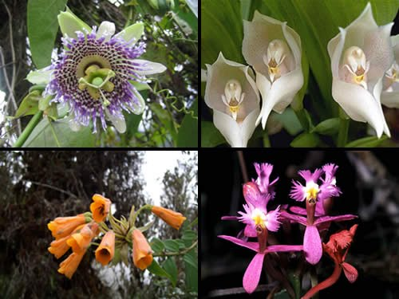
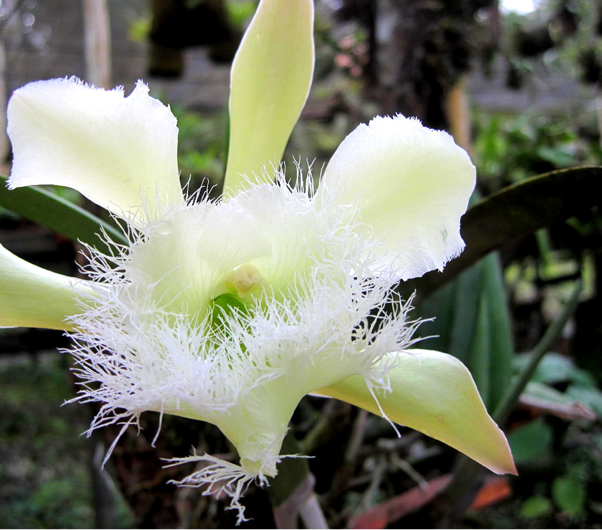

Pagina principal
Animales de Honduras
Parque nacional la tigra
Biosfera del rio Platano
Plantas en Honduras
La republica de Honduras, es un pais
centroamericano, geograficamente ubicado
dentro de los tropicos, lo que le permite que
su naturaleza brinde un habitat adecuado para
la flora y fauna de especies especiales,
variadas, a pesar de esto, algunas de ellas se
encuentran en via de extincion.
La flora de Honduras es muy variada, la selva
lluviosa o pluvioselva, también clasificado
como Bosque lluvioso Tropical, es uno de las
mas impresionantes como formacion vegetal; los
ecologos la denominan Formacion Higrofila
Megatermica, por corresponder a regiones de
gran humedad y constantes temperaturas altas.
En los cuales hay una especie dominante unica,
como pinos o abetos, cubriendo grandes areas.

